배우기 전에 먼저 해 보세요. 틀려도 괜찮아요.
das Haus, in dem wir wohnen은 무슨 뜻일까요?
in dem은 '그 안에서'를 뜻해요.
Du solltest zuerst mit ihm reden.은 어떤 말일까요?
sollte는 부드러운 조언이에요.
B1.1 Im Gespräch · Lektion 2
함께 사는 사람들
음성은 준비 중이에요. 듣기 단추와 받아쓰기는 음성이 올라오면 쓸 수 있어요. 그동안은 글을 읽으면서 공부해요.
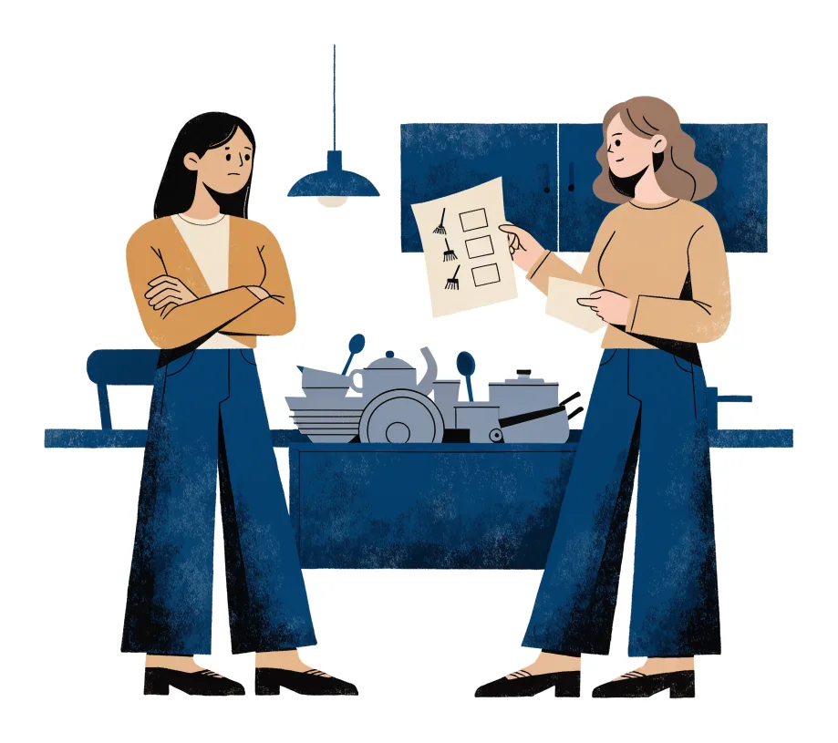
함께 살면 좋은 일도 많고 부딪히는 일도 생겨요. 설거지, 소음, 밤늦은 손님 같은 문제를 어떻게 꺼내고 풀까요? 이 과에서는 사람과 물건을 더 자세히 설명하는 관계문을 넓히고, würde, sollte, könnte로 부드럽게 조언하는 법을 배워요.
문법 Relativsätze (Dativ, mit Präposition), Konjunktiv II: Ratschläge (An deiner Stelle würde ich …)
과제대학WG 회의에서 문제를 이야기하고 규칙 정하기
과제직장이웃과의 소음 문제를 편지로 해결하기
이 과를 마치면 함께 사는 방식을 견주고, 갈등을 이야기해서 풀고, 조언할 수 있어요.
이 과에서 쓸 말이에요.
배우기 전에 먼저 해 보세요. 틀려도 괜찮아요.
das Haus, in dem wir wohnen은 무슨 뜻일까요?
in dem은 '그 안에서'를 뜻해요.
Du solltest zuerst mit ihm reden.은 어떤 말일까요?
sollte는 부드러운 조언이에요.
Lektion 1의 낱말 다섯 개를 다시 떠올려 보세요.
9월의 목요일 저녁, WG 부엌이에요. 싱크대에 그릇이 쌓여 있어요. Jiu와 Lena가 오늘 저녁 WG 회의에서 할 말을 정해요.
들으면서 찾아보세요. 두 사람은 손님에 대해 어떤 규칙을 제안하려고 하나요?
수요일 점심때, 회사 구내식당이에요. Dohyun이 피곤해 보여요. 아들 Minjun은 2주 전에 초등학교에 들어갔어요.
들으면서 찾아보세요. Markus는 무엇부터 하라고 조언하나요?
어학원 수업 시간이에요. 오늘의 주제는 사는 방식이에요. Frau Becker가 자기가 사는 집 이야기를 해요.
들으면서 찾아보세요. Frau Becker는 어떤 집에 사나요?
세 대화를 듣고 답하세요.
싱크대의 냄비는 누가 쓴 것인가요?
Jiu hat schon mit Felix über den Lärm gesprochen.
다투고 싶지 않아서 아직 말하지 않았어요.
두 사람은 평일 손님에 대해 어떤 규칙을 제안하려고 하나요?
Dohyun의 가족은 왜 힘든가요?
Markus würde zuerst die Hausverwaltung anrufen.
먼저 직접 이야기하라고 했어요.
Dohyun은 오늘 저녁에 무엇을 하나요?
Frau Becker는 어떤 집에 사나요?
Sora möchte gern in einem Mehrgenerationenhaus wohnen.
조용한 시간이 모자랄 것 같다고 했어요.
낱말 51개예요. 명사는 der, die, das를 색으로 구분했어요.
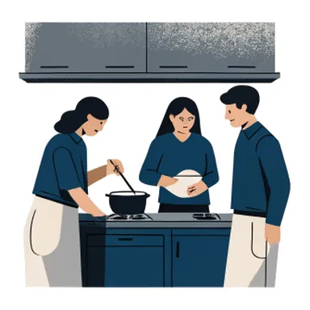
die Wohngemeinschaft, die Wohngemeinschaften 주거 공동체 (WG)
Ich wohne in einer Wohngemeinschaft.저는 WG에 살아요.
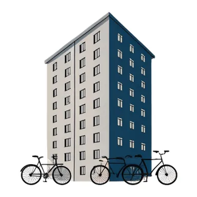
das Wohnheim, die Wohnheime 기숙사
Viele Studierende wohnen im Wohnheim.기숙사에 사는 대학생이 많아요.
die Hausarbeit 집안일
Wir teilen die Hausarbeit.우리는 집안일을 나눠서 해요.
sich abwechseln (hat sich abgewechselt) 번갈아 하다
Wir wechseln uns jede Woche ab.우리는 주마다 번갈아 해요.
teilen (hat geteilt) 나누다, 함께 쓰다
Wir teilen die Küche und das Bad.우리는 부엌과 욕실을 함께 써요.
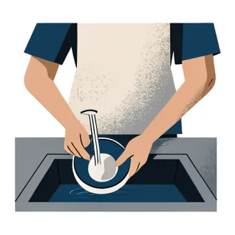
spülen (hat gespült) 설거지하다
Wer spült heute?오늘은 누가 설거지해요?
die Spüle, die Spülen 싱크대
Die Spüle ist schon wieder voll.싱크대가 또 꽉 찼어요.
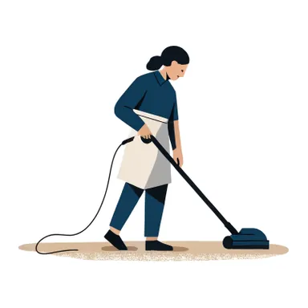
staubsaugen (hat gestaubsaugt) 청소기를 돌리다
Am Samstag muss ich staubsaugen.토요일에는 청소기를 돌려야 해요.
einziehen (ist eingezogen) 이사 들어오다
Wir sind im August eingezogen.우리는 8월에 이사 왔어요.
zusammenleben (hat zusammengelebt) 함께 살다
Hier leben Junge und Alte zusammen.여기는 젊은 사람과 나이 든 사람이 함께 살아요.
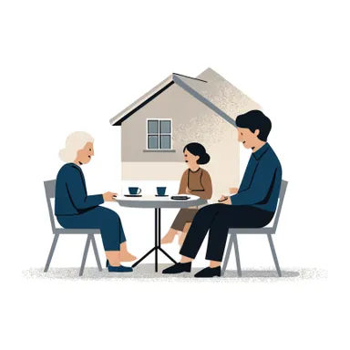
das Mehrgenerationenhaus, die Mehrgenerationenhäuser 여러 세대가 함께 사는 집
Frau Becker wohnt in einem Mehrgenerationenhaus.Frau Becker는 여러 세대가 함께 사는 집에 살아요.
die Generation, die Generationen 세대
Drei Generationen wohnen in einem Haus.세 세대가 한 집에 살아요.
die Gemeinschaft, die Gemeinschaften 공동체
Die Gemeinschaft im Haus ist gut.건물 사람들끼리 사이가 좋아요.
die Privatsphäre 사생활
Ich brauche meine Privatsphäre.저는 사생활이 필요해요.
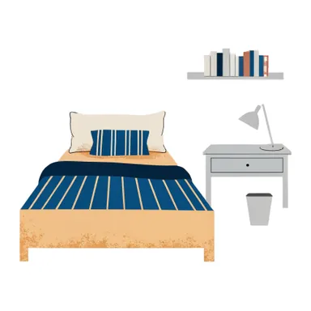
ordentlich 깔끔한
Lena ist sehr ordentlich.Lena는 아주 깔끔해요.
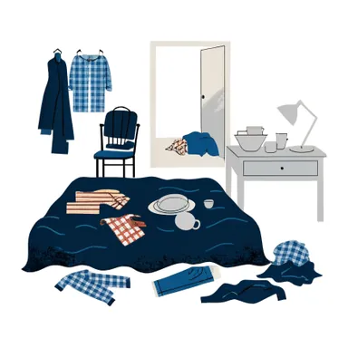
unordentlich 지저분한
Sein Zimmer ist unordentlich.그 사람의 방은 지저분해요.
der Mieter, die Mieter 세입자
Im Haus wohnen zwölf Mieter.그 건물에는 세입자가 열두 명 살아요.
die Hausverwaltung, die Hausverwaltungen 건물 관리 회사
Ich rufe die Hausverwaltung an.관리 회사에 전화해요.
hellhörig 소리가 잘 들리는
Die Wohnung ist sehr hellhörig.그 집은 소리가 아주 잘 들려요.
sich wohlfühlen (hat sich wohlgefühlt) 편안하게 느끼다
In der WG fühle ich mich wohl.WG에서 지내는 게 편안해요.
der Konflikt, die Konflikte 갈등
In jeder WG gibt es Konflikte.어느 WG에나 갈등이 있어요.
der Streit 다툼
Ich möchte keinen Streit.다투고 싶지 않아요.
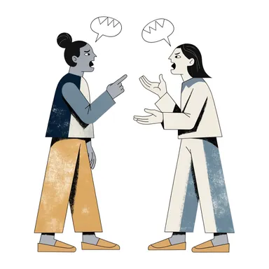
sich streiten (hat sich gestritten) 다투다
Sie streiten sich über den Putzplan.그 사람들은 청소 당번표 때문에 다퉈요.
nerven (hat genervt) 짜증 나게 하다
Der Lärm nervt mich.소음 때문에 짜증이 나요.
wütend 화가 난
Er war sehr wütend.그 사람은 몹시 화가 났어요.
schimpfen (hat geschimpft) 불평하다, 야단치다
Schimpf nicht, sag es ihm freundlich!불평하지 말고 친절하게 말해요!
die Rücksicht 배려
Bitte nehmen Sie Rücksicht auf die Nachbarn.이웃을 배려해 주세요.
das Verständnis 이해
Vielen Dank für Ihr Verständnis.이해해 주셔서 감사합니다.
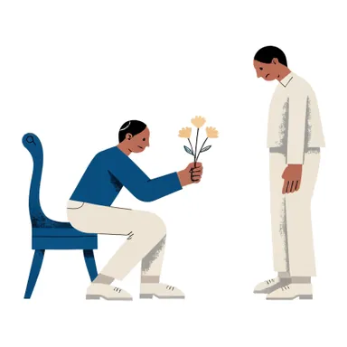
sich entschuldigen (hat sich entschuldigt) 사과하다
Felix hat sich entschuldigt.Felix가 사과했어요.
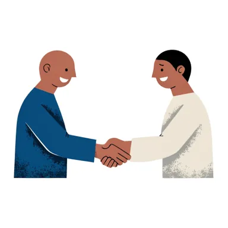
der Kompromiss, die Kompromisse 타협
Wir haben einen Kompromiss gefunden.우리는 타협점을 찾았어요.
die Lösung, die Lösungen 해결책
Wir brauchen eine Lösung.해결책이 필요해요.
lösen (hat gelöst) 풀다, 해결하다
Wir lösen das Problem zusammen.그 문제를 함께 풀어요.
sich einigen (hat sich geeinigt) 합의하다
Wir haben uns auf drei Regeln geeinigt.우리는 규칙 세 가지에 합의했어요.
ansprechen (du sprichst an, hat angesprochen) (문제를) 꺼내다
Ich spreche das Problem heute an.오늘 그 문제를 꺼낼게요.
zugeben (du gibst zu, hat zugegeben) 인정하다
Er gibt zu, dass er zu laut war.그 사람은 너무 시끄러웠다고 인정해요.
recht haben 옳다
Du hast recht.당신 말이 맞아요.
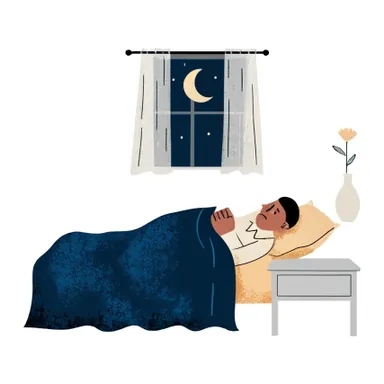
einschlafen (du schläfst ein, ist eingeschlafen) 잠들다
Ich konnte nicht einschlafen.잠을 못 잤어요.
begegnen (ist begegnet) 마주치다
Ich begegne ihm oft im Treppenhaus.저는 그 사람을 계단에서 자주 마주쳐요.
An deiner Stelle 내가 당신이라면
An deiner Stelle würde ich mit ihm reden.저라면 그 사람과 이야기하겠어요.
auf jeden Fall 꼭, 어쨌든
Du solltest auf jeden Fall mit ihm sprechen.꼭 그 사람과 이야기하는 게 좋아요.
auf keinen Fall 절대로 (~ 않다)
Ich würde auf keinen Fall schimpfen.저라면 절대로 불평하지 않겠어요.
ehrlich 솔직한
Sei ehrlich, aber freundlich.솔직하되 친절하게 말해요.
höflich 공손한
Der Brief ist sehr höflich.그 편지는 아주 공손해요.
vermeiden (hat vermieden) 피하다
Ich möchte Streit vermeiden.다툼을 피하고 싶어요.
klären (hat geklärt) 분명히 하다, 해결하다
Wir sollten das heute klären.그건 오늘 해결하는 게 좋겠어요.
besprechen (du besprichst, hat besprochen) 의논하다
Wir besprechen das Problem in der WG.그 문제를 WG에서 의논해요.
das Gespräch, die Gespräche 대화
Danke für das gute Gespräch.좋은 이야기 나눠 줘서 고마워요.
reagieren (hat reagiert) 반응하다
Wie hat er reagiert?그 사람이 어떻게 반응했어요?
vertrauen (hat vertraut) 믿다
Ich vertraue meinen Mitbewohnern.저는 룸메이트들을 믿어요.
gerecht 공평한
Der neue Plan ist gerecht.새 당번표는 공평해요.
erledigen (hat erledigt) 처리하다, 해내다
Ich erledige das heute noch.그건 오늘 안에 해 놓을게요.
이 과의 낱말로 여덟 문제를 풀어요.
Dativ에서는 dem, der, denen을 써요.
아래로 갈수록 조언이 분명해져요.
규칙
설명하는 문장 안에서 그 명사가 '~에게'에 해당하면 Dativ를 써요. helfen, gehören, vertrauen, begegnen, danken처럼 Dativ와 쓰는 동사가 있을 때예요. der와 das 명사는 dem, die 명사는 der, 여럿은 denen이에요. denen만 관사와 모양이 달라요.
| 명사 | Dativ | 보기 |
|---|---|---|
| der | dem | der Mann, dem ich helfe |
| das | dem | das Kind, dem ich helfe |
| die | der | die Frau, der ich helfe |
| 여럿 | denen | die Leute, denen ich helfe |
주의 설명하는 문장의 동사가 무엇을 요구하는지 보세요. Ich helfe dem Nachbarn.에서 Nachbar가 Dativ니까 der Nachbar, dem ich helfe가 돼요. Ich sehe den Nachbarn.에서는 Akkusativ니까 der Nachbar, den ich sehe예요.
규칙을 보고 바로 확인해 보세요.
Felix ist jemand, … man alles sagen kann. 빈칸에 알맞은 말은 무엇인가요?
규칙
설명하는 문장의 동사가 전치사와 함께 쓰이면 그 전치사가 der, das, die 앞으로 와요. 전치사가 격을 정해요. mit, bei, von, zu 뒤는 늘 Dativ예요. über, für, an, auf는 동사에 따라 달라요. sprechen über와 sich halten an은 Akkusativ와 써요.
| 동사 | 보기 |
|---|---|
| wohnen in (Dativ) | das Haus, in dem ich wohne |
| reden mit (Dativ) | die Frau, mit der ich rede |
| sprechen über (Akk.) | das Problem, über das wir sprechen |
| warten auf (Akk.) | der Bus, auf den ich warte |
주의 두 문장으로 나눠 보면 쉬워요. Das ist der Mitbewohner. Ich koche mit dem Mitbewohner. 뒤 문장의 mit dem Mitbewohner가 mit dem이 되고 동사가 끝으로 가요. 전치사와 der, das, die는 떨어지지 않아요.
규칙을 보고 바로 확인해 보세요.
Das sind die Freunde, … er gekocht hat. 빈칸에 알맞은 말은 무엇인가요?
규칙
설명하는 문장을 시작하는 말은 두 가지를 보고 정해요. 앞의 명사가 der, das, die 가운데 무엇인지, 그리고 설명하는 문장 안에서 그 명사가 어떤 구실을 하는지예요. 거의 다 관사와 모양이 같고 denen만 달라요.
| 명사 | Nom. | Akk. | Dat. |
|---|---|---|---|
| der | der | den | dem |
| das | das | das | dem |
| die | die | die | der |
| 여럿 | die | die | denen |
주의 같은 이웃도 구실에 따라 달라져요. 그 이웃이 무엇을 하면 der, 내가 그 이웃을 보거나 만나면 den, 내가 그 이웃에게 무엇을 주거나 도우면 dem이에요.
규칙을 보고 바로 확인해 보세요.
Die Leute, … ich wohne, sind nett. 빈칸에 알맞은 말은 무엇인가요?
규칙
조언할 때 명령문을 쓰면 세게 들려요. würde, sollte, könnte를 쓰면 부드러워져요. An deiner Stelle würde ich …는 '내가 당신이라면 ~하겠다'예요. Du solltest …는 '~하는 게 좋다', Du könntest …는 '~할 수도 있다'예요. 존댓말로는 An Ihrer Stelle, Sie sollten, Sie könnten이라고 해요.
| 틀 | 느낌 |
|---|---|
| Du könntest … | 가볍게 내놓는 생각 |
| Ich würde … | 내 생각을 말하기 |
| An deiner Stelle würde ich … | 상대 처지에서 말하기 |
| Du solltest … | 분명하게 권하기 |
주의 An deiner Stelle가 문장 맨 앞에 오면 바로 뒤에 würde가 와요. An deiner Stelle würde ich es ansprechen. 조언을 구할 때는 Was würdest du an meiner Stelle tun?이라고 물어요.
규칙을 보고 바로 확인해 보세요.
An Ihrer Stelle … ich die Nachbarin ansprechen. 빈칸에 알맞은 말은 무엇인가요?
듣고 알맞은 것을 고르세요.
Felix는 어떤 룸메이트인가요?
Felix ist ein Mitbewohner, mit dem man gut reden kann.
Markus는 무엇을 조언하나요?
An deiner Stelle würde ich zuerst selbst mit ihm reden.
Frau Becker는 누구를 돕나요?
Neben mir wohnt eine alte Dame, der ich beim Einkaufen helfe.
무슨 일이 있었나요?
Wir haben uns auf drei Regeln geeinigt.
WG 회의 다음 날, Felix가 음성 메시지를 남겼어요. 듣고 답하세요.
Eine Nachricht von Felix
Felix Hallo ihr zwei, hier ist Felix. Danke für das Gespräch gestern Abend.
Felix Ihr habt recht: Ich habe in den letzten Wochen zu wenig geputzt. Das tut mir leid.
Felix Heute Morgen habe ich die Küche geputzt und den Müll rausgebracht.
Felix Noch eine Frage: Am Samstag kommt meine Schwester zu Besuch. Sie würde gern bei uns übernachten. Ist das für euch in Ordnung?
Felix Schreibt mir kurz, damit ich ihr Bescheid sagen kann.
Felix gibt zu, dass er zu wenig geputzt hat.
Was hat Felix heute Morgen gemacht?
토요일에 누가 오나요?
Wozu sollen Jiu und Lena schreiben?
Dohyun이 위층 이웃에게 쓴 편지예요. 읽고 답하세요.
Ein Brief an den Nachbarn
Lieber Herr Novak,
wir sind die Familie, die unter Ihnen wohnt. Ich schreibe Ihnen, weil ich Sie leider fast nie treffe.
Es geht um die Musik am Abend. Das Haus, in dem wir wohnen, ist sehr hellhörig, und wir hören bei uns fast alles.
Unser Sohn, der seit zwei Wochen in die Schule geht, kann deshalb oft nicht einschlafen.
Könnten Sie die Musik nach 22 Uhr bitte leiser machen? Das wäre sehr nett.
Wenn Sie möchten, können wir auch gern persönlich sprechen. Kommen Sie doch einmal auf einen Kaffee vorbei!
Mit freundlichen Grüßen
Dohyun Park, 2. Stock
Warum schreibt Dohyun einen Brief?
Im Haus hört man fast nichts.
소리가 아주 잘 들린다고 했어요.
Wer kann nicht einschlafen?
Worum bittet Dohyun?
Dohyun lädt den Nachbarn zu einem Kaffee ein.
Dativ예요. dem, der, denen 가운데 알맞은 것을 고르세요.
Das ist der Nachbar, wir oft helfen.
우리가 자주 도와주는 이웃이에요.
Das ist die Nachbarin, das Auto gehört.
그 차의 주인인 이웃이에요.
Die Mitbewohner, ich vertraue, sind Lena und Felix.
제가 믿는 룸메이트는 Lena와 Felix예요.
Felix ist jemand, man alles sagen kann.
Felix는 무슨 말이든 할 수 있는 사람이에요.
Das Kind, ich das Buch gebe, heißt Hana.
제가 책을 주는 아이는 이름이 Hana예요.
Die Studenten, Frau Becker Kuchen bringt, tragen ihre Kisten.
Frau Becker가 케이크를 갖다주는 대학생들이 상자를 날라 줘요.
전치사 뒤에 알맞은 것을 고르세요.
Das ist der Mitbewohner, mit ich koche.
저와 같이 요리하는 룸메이트예요.
Das ist die Wohnung, in wir wohnen.
우리가 사는 집이에요.
Das sind die Freunde, mit er gekocht hat.
그 사람이 같이 요리한 친구들이에요.
Das ist das Problem, über ich sprechen wollte.
제가 이야기하려던 문제예요.
sprechen über는 Akkusativ와 써요.
Das ist ein Kompromiss, mit alle leben können.
모두가 받아들일 수 있는 타협이에요.
Der Bus, auf wir warten, kommt nicht.
우리가 기다리는 버스가 안 와요.
warten auf는 Akkusativ와 써요.
조언하는 말이에요. 알맞은 모양을 고르세요.
An deiner Stelle ich mit ihm reden.
저라면 그 사람과 이야기하겠어요.
Du ihm einen Brief schreiben.
그 사람에게 편지를 쓰는 게 좋아요.
Sie zuerst mit der Nachbarin sprechen.
먼저 그 이웃과 이야기해 보시면 어때요?
Was du an meiner Stelle tun?
당신이라면 어떻게 하겠어요?
Wir eine Lösung vorschlagen.
우리가 해결책을 내놓는 게 좋겠어요.
낱말을 순서대로 눌러 문장을 만드세요.
우리가 자주 도와주는 이웃이에요.
우리가 사는 건물은 소리가 잘 들려요.
저라면 그 사람과 이야기하겠어요.
그 사람이 같이 요리한 친구들이에요.
그 사람에게 편지를 쓰는 게 좋아요.
뜻이 반대인 말을 짝지으세요.
빈칸에 알맞은 낱말을 쓰세요.
Wir haben einen gefunden.
우리는 타협점을 찾았어요.
Die Wohnung ist sehr .
그 집은 소리가 아주 잘 들려요.
Wir wechseln uns jede Woche .
우리는 주마다 번갈아 해요.
Vielen Dank für Ihr .
이해해 주셔서 감사합니다.
듣고 그대로 써 보세요.
음성 준비 중Das ist ein Kompromiss, mit dem alle leben können. 모두가 받아들일 수 있는 타협이에요.
음성 준비 중An deiner Stelle würde ich mit ihm reden. 저라면 그 사람과 이야기하겠어요.
음성 준비 중Das ist der Nachbar, dem wir oft helfen. 우리가 자주 도와주는 이웃이에요.
Ich würde gern etwas besprechen. 의논하고 싶은 게 있어요.
Es geht um die Küche. 부엌 때문이에요.
Mich stört, dass das Geschirr tagelang in der Spüle steht. 그릇이 며칠씩 싱크대에 있는 게 불편해요.
Ich konnte nicht einschlafen. 잠을 못 잤어요.
An deiner Stelle würde ich mit ihm reden. 저라면 그 사람과 이야기하겠어요.
Du solltest es ruhig ansprechen. 차분하게 그 이야기를 꺼내는 게 좋아요.
Du könntest einen Brief schreiben. 편지를 쓰면 어때요?
Das würde ich nicht tun. 저라면 그러지 않겠어요.
Wir könnten uns jede Woche abwechseln. 주마다 번갈아 하면 어때요?
Wie wäre es mit einem neuen Putzplan? 청소 당번표를 새로 만들면 어때요?
Was schlägst du vor? 어떻게 하자는 거예요?
Das ist ein Kompromiss, mit dem ich leben kann. 그 타협이라면 저도 받아들일 수 있어요.
Du hast recht. Das tut mir leid. 당신 말이 맞아요. 미안해요.
Das habe ich gar nicht gemerkt. 전혀 몰랐어요.
Kein Problem, danke für dein Verständnis. 괜찮아요, 이해해 줘서 고마워요.
Einverstanden. 좋아요, 그렇게 해요.
Ich wohne in einer WG, in der drei Leute leben. 저는 세 사람이 사는 WG에 살아요.
Wir teilen die Küche und das Bad. 우리는 부엌과 욕실을 함께 써요.
Die Leute, mit denen ich wohne, sind nett. 저와 같이 사는 사람들은 친절해요.
Ich brauche auch meine Privatsphäre. 저는 사생활도 필요해요.
과제 고르기
역할 대화와 말하기, 쓰기 과제는 대학 생활과 직장 생활 두 가지예요. 하나를 고르면 다음 과에서도 그쪽 과제가 나와요. 언제든 바꿀 수 있어요.
대화 A에서 역할을 하나 고르세요. 상대의 말은 글로 읽고, 내 차례에는 직접 말해요.
대화 B에서 역할을 하나 고르세요. 상대의 말은 글로 읽고, 내 차례에는 직접 말해요.
내가 사는 곳을 떠올리고 칸을 채우세요. 완성된 문장을 소리 내어 읽어 보세요.
Ich wohne in einer WG mit zwei Mitbewohnern.
Mir gefällt besonders die große Küche.
Mich stört manchmal der Lärm am Abend.
Eine Regel, die ich wichtig finde: Man sollte nach 22 Uhr leise sein.
나는 세 사람이 사는 WG에 살아요. 오늘 저녁에 WG 회의가 있고, 룸메이트가 내 말을 들어요. 룸메이트의 질문에 답해요.
그릇이 며칠씩 싱크대에 있어요. 주마다 번갈아 청소하는 새 당번표를 제안하고 싶어요. 평일에 손님이 밤늦게까지 있으면 잠을 못 자요. 평일 손님은 22시까지 있고, 미리 알려 주면 좋겠어요.
룸메이트가 물어요. 쪽지를 보고 답하세요. 질문을 듣고 소리 내어 답한 뒤 예시 답과 비교해 보세요.
Du wolltest etwas besprechen. Worum geht es? 의논할 게 있다고 했죠. 무슨 일이에요?
Es geht um die Küche. Das Geschirr steht oft tagelang in der Spüle.
Oh, das habe ich gar nicht gemerkt. Was schlägst du vor? 아, 전혀 몰랐어요. 어떻게 하면 좋겠어요?
Wir könnten einen neuen Putzplan machen und uns jede Woche abwechseln.
Einverstanden. Gibt es noch etwas? 좋아요. 또 있어요?
Ja, der Besuch am Abend. Unter der Woche kann ich nach elf nicht einschlafen.
Was wäre für dich in Ordnung? 어떻게 하면 괜찮겠어요?
Besuch bis zweiundzwanzig Uhr wäre für mich in Ordnung. Und sag bitte vorher Bescheid.
Gut. Das ist ein Kompromiss, mit dem ich leben kann. 좋아요. 그 타협이라면 저도 받아들일 수 있어요.
Danke. Dann schreibe ich die Regeln auf, damit wir sie nicht vergessen.
Unsere WG-Regeln
WG 회의에서 정한 규칙을 룸메이트들에게 메시지로 알려 보세요. 일곱 문장쯤 써요.
Hallo zusammen, danke für das gute Gespräch gestern. Hier sind die Regeln, auf die wir uns geeinigt haben. Wir wechseln uns jede Woche ab: Die Person, die die Küche putzt, bringt auch den Müll raus. Geschirr, das in der Spüle steht, wird am selben Tag gespült. Unter der Woche geht der Besuch um 22 Uhr. Wenn jemand bei uns übernachtet, sagt er oder sie vorher Bescheid. Den neuen Putzplan, an den wir uns jetzt alle halten, hänge ich an die Kühlschranktür. Viele Grüße, Minji
다 쓴 뒤에 확인해 보세요.
나는 건물 2층에 살아요. 위층 이웃이 저녁마다 자정까지 음악을 크게 들어요. 회사에서 동료가 물어요.
그 이웃을 거의 만나지 못했어요. 나는 6시에 일어나야 해서 잠을 잘 못 자요. 친절한 편지를 써서 22시 뒤에는 음악을 줄여 달라고 부탁하려고 해요. 그래도 안 되면 관리 회사에 알릴 생각이에요.
동료가 물어요. 쪽지를 보고 답하세요. 질문을 듣고 소리 내어 답한 뒤 예시 답과 비교해 보세요.
Du siehst müde aus. Was ist los? 피곤해 보여요. 무슨 일이에요?
Die Nachbarin, die über mir wohnt, hört jeden Abend bis Mitternacht laute Musik.
Hast du schon mit ihr gesprochen? 벌써 이야기해 봤어요?
Noch nicht. Sie ist jemand, dem ich fast nie begegne.
Was hast du vor? 어떻게 할 생각이에요?
Ich würde ihr gern einen freundlichen Brief schreiben.
Und was schreibst du? 뭐라고 쓸 거예요?
Ich bitte sie, die Musik nach zweiundzwanzig Uhr leiser zu machen.
Und wenn das nicht hilft? 그래도 안 되면요?
Dann würde ich mich an die Hausverwaltung wenden. Aber das ist der letzte Schritt.
Ein Brief an die Nachbarin
위층 이웃에게 소음 문제를 알리는 친절한 편지를 써 보세요. 일곱 문장쯤 써요.
Liebe Frau Kaya, ich bin Ihre Nachbarin aus dem ersten Stock. Ich schreibe Ihnen, weil ich Sie leider selten treffe. Es geht um die Musik, die ich abends oft bis Mitternacht höre. Das Haus, in dem wir wohnen, ist leider sehr hellhörig. Ich muss um sechs Uhr aufstehen und kann deshalb schlecht einschlafen. Könnten Sie die Musik nach 22 Uhr bitte leiser machen? Wenn Sie möchten, können wir auch gern persönlich sprechen. Vielen Dank für Ihr Verständnis. Mit freundlichen Grüßen, Minji Choi
다 쓴 뒤에 확인해 보세요.
Ich kann sagen, wie und mit wem ich wohne.어떻게, 누구와 사는지 말할 수 있어요.
Ich kann ein Problem ruhig ansprechen und eine Lösung vorschlagen.문제를 차분하게 꺼내고 해결책을 제안할 수 있어요.
Ich kann Ratschläge geben.조언할 수 있어요.
Ich kann Personen und Dinge mit Relativsätzen genauer beschreiben.설명하는 문장으로 사람과 물건을 더 자세히 말할 수 있어요.